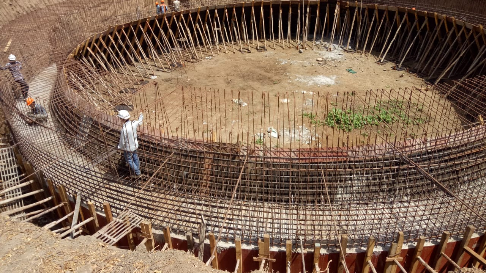

01
Upgradation of Sewage Treatment Plant, Singanpore — 155 MLD to 255 MLD
The largest single work in the firm's record: upgrading Surat's Singanpore sewage treatment plant from 155 MLD to 255 MLD for the Surat Municipal Corporation.
ClientSurat Municipal Corporation
LocationSinganpore, Surat
Capacity255 MLD
TypeWater / Waste Water
